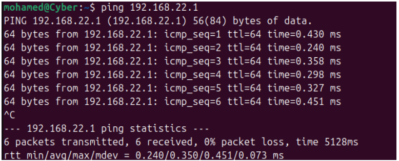

IP Address Table
| Device | Role | IP Address | Subnet Mask |
|---|---|---|---|
| Desktop VM (Ubuntu Desktop) | Management | 192.168.22.2 | 255.255.255.0 |
| Gateway Router VM (enp0s3) | Internet Access | 10.0.0.16 | 255.255.255.0 |
| Gateway Router VM (enp0s8) | Subnet 01 - Internal Network | 192.168.22.1 | 255.255.255.0 |
| Gateway Router VM (enp0s9) | Subnet 02 - Internal Network | 192.168.122.1 | 255.255.255.0 |
| Application Server VM (Bitnami) | Server | 192.168.122.2 | 255.255.255.0 |
Functional Test Results
Evidence of communication between all VMs:
- Ping results between Ubuntu Server and Desktop:
- Ping results between Ubuntu Server and Application Server:
- Application server to Ubuntu server:
- Ubuntu Desktop to Ubuntu server: 


Video Demonstration
Watch the project demonstration video below: